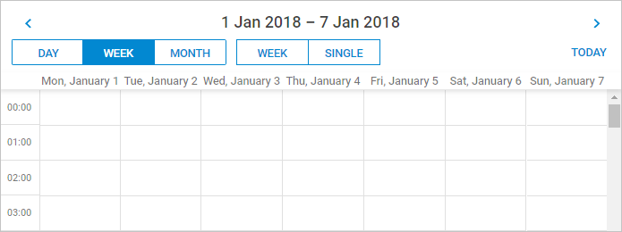
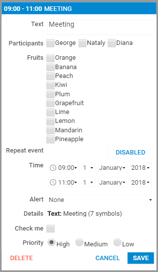
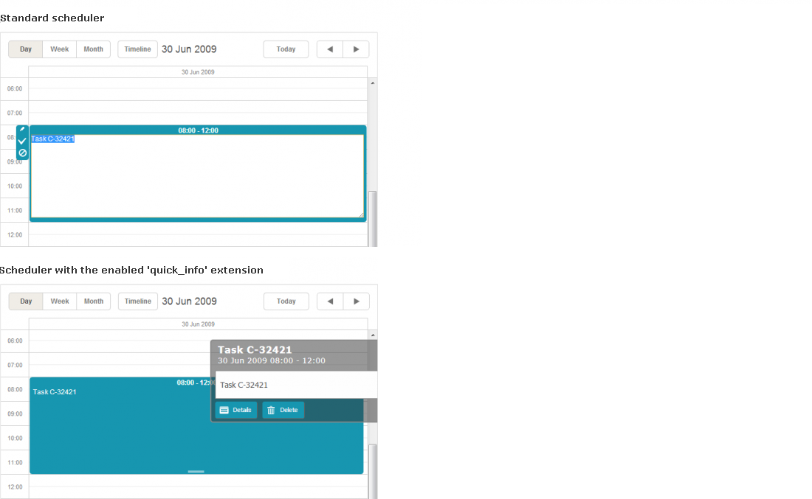

dhtmlxScheduler provides support for touch devices, such as:
The scheduler will work on smartphones as well, but due to the lack of screen space it will require manual configuration.
Important tips!
<meta name="viewport" content="width=device-width, initial-scale=1">
When you initialize Scheduler via the header configuration property, you'll be able to choose the header structure that fits the screen size of the client. It will also apply certain styles which will make elements and font sizes responsive on small screens.
For example, you can rearrange the header into multiple rows:

In the image above Scheduler is displayed on a small screen.
This setting can be changed dynamically, which allows you to define separate header configurations both for large and small screens:
// define configs
const compactHeader = {
rows: [
{
cols: [
"prev",
"date",
"next",
]
},
{
cols: [
"day",
"week",
"month",
"spacer",
"today"
]
}
]
};
const fullHeader = [
"day",
"week",
"month",
"date",
"prev",
"today",
"next"
];
// add a switch to select an appropriate config for a current screen size
function resetConfig(){
let header;
if (window.innerWidth < 1000) {
header = compactHeader;
} else {
header = fullHeader;
}
scheduler.config.header = header;
return true;
}
// apply the config initially and each time scheduler repaints or resizes:
resetConfig();
scheduler.attachEvent("onBeforeViewChange", resetConfig);
scheduler.attachEvent("onSchedulerResize", resetConfig);
scheduler.config.responsive_lightbox = true; // responsive lightbox
scheduler.init("scheduler_here");
Related sample: Responsive scheduler
Scheduler API provides the responsive_lightbox configuration option that enables responsiveness of the lightbox.
scheduler.config.responsive_lightbox = true; //disabled by default
//you need to set this value to true to enable the responsiveness of the lightbox
The elements of the lightbox adapt to a small screen in the image below:

Related sample: Responsive scheduler
There is a possibility to customize the lightbox appearance when it is responsive. The lightbox will have an additional CSS class dhx_cal_light_responsive which you can use in your selectors.
By default, this class has some media queries associated with it. These new styles will have effect only on smaller screen/window sizes (< 1024px) and can change look and feel of the lightbox on these screens.
Here is a list of configuration options related to the mobile/responsive support:
Specially for providing touch functionality, the library is extended with the "Quick Info" extension.
The extension allows you to replace the standard sidebar buttons and the simplified edit form (which are quite small and hard-to-target on touch devices) with new ones, bigger and handier.
To activate the big-buttons scheduler, include the "Quick Info" extension file on the page:
<script src="../../codebase/ext/dhtmlxscheduler_quick_info.js"></script>
<script>
scheduler.init('scheduler_here',new Date(2019,5,30),"day");
...
<script>
Related sample: Touch-oriented scheduler
Once the extension is enabled, the scheduler automatically replaces standard buttons with large-size ones:

Note, the quick-info selection side menu and selection menu in the standard scheduler use the same configuration that is stored in the icons_select object.
The extension provides: